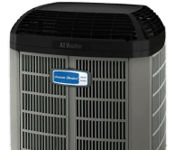
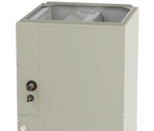
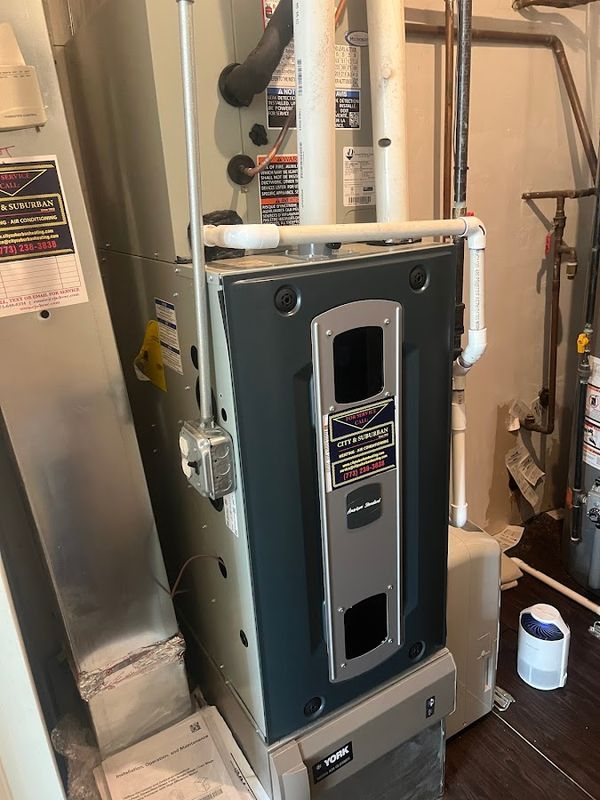

Signs a furnace needs attention
Is the furnace overdue for a tune-up?
Most furnaces give a warning before a midwinter failure. Open the sign that matches the house. Each card lists the likely causes, the safe checks a homeowner can make, and what a tune-up looks at.
Pricing
What decides the price of a furnace service
A tune-up is a set visit. The tune-up price is quoted upfront when the visit is booked. What the visit finds can change the total, so City & Suburban puts any added repair in writing for approval first. These six factors decide it.
How City & Suburban prices every job
- 1 Diagnosis firstA technician finds the cause before anything is quoted.
- 2 Written price before any workThe exact price, in writing, for approval.
- 3 No hidden feesThe approved price is the price.
- 4 Repair first where repair is rightReplacement only when the evidence supports it.
Financing available
Wells Fargo Home Projects credit card, subject to credit approval.
When a tune-up finds more
Furnace maintenance and repair: fix it now or plan ahead
Most tune-ups end with a clean, tested furnace and nothing more. When the visit finds a worn part, City & Suburban prices the repair upfront and repairs first where repair is right. On an older furnace, the $5,000 rule gives a quick second opinion: multiply the age by the repair price, and a result above 5,000 means a replacement price is worth seeing too.
Under 5,000: repair it and keep the yearly service going.
What a furnace service covers
One visit, every part of the heating setup
American Standard installed, all makes repaired
When a furnace is past saving, City & Suburban installs American Standard
Yearly service stretches a furnace's life, but not forever. When a repair no longer makes sense, City & Suburban installs American Standard furnaces, heat pumps and air conditioners, with upfront pricing and no hidden fees.

Heat pumps Including cold-climate models
Evaporator coils Matched to the outdoor unit Air conditioners
Replaced with the furnace or alone
Air conditioners
Replaced with the furnace or alone
How it works
How a City & Suburban visit works
-
1Reach out Call, text or book online.
-
2Pick a time Same-day visits when the schedule allows.
-
3On-site visit A technician diagnoses the problem.
-
4Honest pricing The price, in writing, before any work.
-
5Repair and test Repair, test and clean up.
-
6Enjoy comfort A warm, safe home.
Reviews
What Chicago homeowners say about furnace service from City & Suburban
Verbatim from Google. 4.98 average across 204 reviews.
“Rob from City & suburban was super kind and helpful with our furnace and air conditioner maintenance. We wanted to make sure everything was running smoothly before winter and after calling Rob, he was able to come out very quickly.”
“I had forgotten to buy a furnace filter for one of the furnaces, but luckily he had it in his truck. He is very reliable and does a great job.”
“Rob always comes out at a convenient time and his excellent service prevents problems from occurring.”
“Second was a routine cleaning and this last time was on the verge of a break down. They fit me in that day. Same man, same excellent service.”
“I’ve worked with City & Suburban Heating & Cooling since we lived in our condo in Lincoln Park, and now that we’ve moved to a single-family home, they continue to help us maintain our system.”
“Had my furnace serviced and they were fantastic. Technician was able to get the job done quickly.”
“We had a furnace issue, not only was he able to diagnose it a quick fashion, but made the repair without breaking our bank. As a result, we’ve hired him to handle our maintenance on both of the units”
City & Suburban work in Chicago

Service areas
Furnace service across Chicago and the north suburbs
City & Suburban services furnaces in 13 Chicago neighborhoods and 8 north and northwest suburbs.
Chicago neighborhoods
North and northwest suburbs
Each link opens that area's page on the City & Suburban site.
Based in West Town
1225 N Cleaver St, Chicago, IL 60642. Technicians cover the city and the north and northwest suburbs.
Not on the list? Call (773) 238-3838 to check an address outside these 21 areas.
Call City & SuburbanFurnace service questions, answered
What does a furnace service include?
A full furnace service cleans, tests and adjusts the parts that light and run the furnace. The list covers the burners, flame sensor, igniter, inducer and blower, plus the filter, condensate drain and trap. A technician also checks gas pressure, venting and draft, and inspects the heat exchanger. The visit ends with a carbon monoxide test and a thermostat check on a full cycle. City & Suburban technicians are NATE-certified and repair all makes and models, and nothing beyond the tune-up is done without approval.
Is a yearly furnace tune-up worth it?
For most Chicago furnaces, yes. The usual habit is to skip the visit until the furnace fails, and failures often come on the coldest nights, when the furnace runs longest. A coated flame sensor locks the furnace out. Years of choked airflow can overheat and crack a heat exchanger. A warranty claim with no service record is harder to make. A yearly visit catches those problems while the problems are still small. City & Suburban's NATE-certified technicians repair all makes, and maintenance plan members get priority dispatch. Larry V. reviewed City & Suburban on Google in Jul 2025. "Rob always comes out at a convenient time and his excellent service prevents problems from occurring."
Is October too late for a furnace tune-up in Chicago?
October is not too late, but late summer and September are easier. Chicago furnaces usually start running in late September or early October, and the first cold week fills HVAC schedules across the city. A tune-up before then finds a weak igniter or a clogged drain while there is still time to order a part. Once a year is the usual interval for a gas furnace. City & Suburban offers same-day service when the schedule allows, and maintenance plan members get priority dispatch.
What is the difference between a furnace tune-up and furnace service and repair?
A tune-up is preventive. The furnace works, and the visit keeps it working by cleaning, testing and adjusting. Furnace service and repair starts with a fault, such as no heat or a lockout, and the visit finds and fixes the cause. The two often meet, because a tune-up can catch a part that is close to failing. City & Suburban diagnoses before quoting, and a repair found during a tune-up is priced before any work starts. A furnace that has already stopped needs furnace repair instead.
How is gas furnace service different from oil or electric furnace service?
Gas furnace service centers on combustion: burners, flame sensor, igniter, gas pressure, venting and a carbon monoxide test. An oil furnace adds a nozzle and oil filter change, a combustion test and a look at the chimney, because oil leaves soot. An electric furnace has no flame or flue, so the visit tests heating elements, sequencers, limit switches and wiring under load. Standard furnaces in older Chicago homes often vent into a masonry chimney, so a sound visit checks the draft and the chimney liner. Most Chicago homes burn natural gas. City & Suburban repairs all makes and models, and oil heat owners should name the fuel when booking.
Does a tune-up check for carbon monoxide?
A thorough one does. A cracked heat exchanger, a blocked flue or a badly tuned burner can push carbon monoxide into the house, and CO has no smell. A sound tune-up inspects the heat exchanger, checks the vent draft and measures CO in the flue gases and near the furnace. Illinois law adds a second layer. The Carbon Monoxide Alarm Detector Act requires a working CO alarm within 15 feet of every sleeping room. The rule covers homes with a fuel-burning heater or appliance, a fireplace or an attached garage. A gas smell means leaving the house and calling Peoples Gas in Chicago or Nicor Gas in most north suburbs from outside. A furnace visit from City & Suburban is a good reminder to test the alarms.
How often should the furnace filter be changed, and what else can a homeowner do?
Check a standard 1-inch filter monthly in winter and replace it when it looks gray or packed, often every one to three months. Thicker media filters usually last six to twelve months. Keep three feet clear around the furnace, and keep registers and return grilles open. Test the CO alarms every month. On a high-efficiency furnace, clear snow from the outdoor PVC pipes after storms. Burner adjustment, gas pressure, wiring and the heat exchanger belong to a trained technician. Susan N. reviewed City & Suburban on Google in Nov 2025. "I had forgotten to buy a furnace filter for one of the furnaces, but luckily he had it in his truck."
What extra checks does a high-efficiency furnace need?
A high-efficiency furnace rated 90%+ AFUE pulls so much heat from its exhaust that the gases turn into water. That water drains through a trap, a hose and often a small pump. Scale and debris can clog the trap, and a backed-up drain can stop the furnace on a cold night. The service flushes the trap and drain, tests the pump, checks the pressure switch tubing and inspects the PVC vent pipes. There may be one or two, depending on the install. City & Suburban's NATE-certified technicians repair all makes, including condensing furnaces from every maker.
Do Chicago landlords need a furnace service before September 15?
It is the smart deadline. The Chicago Heat Ordinance (Municipal Code 13-196-410) covers landlords who supply heat. From September 15 to June 1, units must stay at least 68°F from 8:30 a.m. to 10:30 p.m. and 66°F overnight. The code lists exceptions, but a furnace that fails in October can leave tenants cold within hours. A tune-up in August or early September leaves time to replace a weak part. City & Suburban maintenance plans keep each furnace in a two-flat or small building on a yearly schedule.
Is a furnace maintenance plan worth it?
A plan suits households that want the yearly visit booked without having to remember it. City & Suburban maintenance plans include seasonal check-ups, priority dispatch and member discounts. Priority dispatch matters most in the first cold week, when many Chicago furnaces start for the first time and schedules fill. A plan also gives owners of more than one unit a steady service record. Adam W. reviewed City & Suburban on Google in Sep 2025. "Signed up for their annual maintenance program."
Does City & Suburban offer commercial furnace service?
Yes. City & Suburban offers commercial HVAC service, and businesses can set up a custom maintenance plan for regular visits. Commercial furnace service starts from the same safety basics as a home tune-up: burners, flame sensing, venting and a carbon monoxide check. A sound commercial visit adds the parts homes rarely have, such as belts, economizer dampers and controls on rooftop units. A building with several furnaces or rooftop units gains the most from a set schedule, so no unit misses its yearly check. City & Suburban quotes the price before any work starts.
How can a homeowner tell a real tune-up from a quick clean-and-check?
Look at what gets measured. A low-price special often swaps the filter, glances at the flame and spends the rest of the visit on upsells. A real tune-up takes readings: gas pressure, temperature rise, carbon monoxide in the flue gas, and a check that the condensate drain flows. Ask for those readings on the invoice. If a technician reports a cracked heat exchanger, ask for a photo of the crack before agreeing to a replacement. City & Suburban diagnoses before quoting, puts the price in writing before work and repairs first where repair is right. Heather S. reviewed City & Suburban on Google in Dec 2025. Her technician "explained what he was doing, what he thought about my old furnace, and we agreed to keep fixing it."
How long does a furnace tune-up take, and is the heat off during the visit?
A routine tune-up on one furnace usually takes about an hour. A high-efficiency model with a dirty drain trap, a furnace in a tight attic, or a home with two furnaces takes longer. The heat is off only while the technician works inside the cabinet, and the furnace runs through full test cycles before the visit ends. City & Suburban prices any added repair upfront, before it starts, so a longer visit never hides a surprise charge. A furnace that passes simply goes back to heating the house.
Does skipping yearly maintenance affect the furnace warranty?
It can. Many furnace warranties expect proper installation and regular maintenance. A maker can question a parts claim when neglect caused the failure, such as a heat exchanger damaged by years of choked airflow. Dated invoices from each yearly visit are the simplest record to keep. City & Suburban installs American Standard equipment, and the warranty terms for each model come in the owner's documents. The tune-up invoice belongs in the same folder, ready for any claim.
Can the furnace and the air conditioner be serviced in the same visit?
Yes, and it saves a second trip. Both systems share the blower and the filter. A combined visit can tune the furnace for winter and check the outdoor unit and indoor coil for summer. Fall suits the furnace half, and spring suits an AC tune-up. Many owners book both halves at once. Austin H. reviewed City & Suburban on Google in Nov 2024. "We wanted to make sure everything was running smoothly before winter and after calling Rob, he was able to come out very quickly."
Where can I get gas furnace service near me in Chicago?
City & Suburban works from West Town and serves 13 Chicago neighborhoods and 8 north and northwest suburbs, from Lincoln Park and Logan Square to Skokie and Park Ridge. The company has been family-owned since 1952, holds a BBB A+ rating and averages 4.98 across 204 Google reviews. NATE-certified technicians repair all makes and models, and same-day visits are possible when the schedule allows. Emergency HVAC service runs every day till midnight, except Sundays, for a furnace that will not wait for a booked visit.
Related heating services
Book a furnace service before the cold
Call or text to book a fall tune-up. City & Suburban will clean and test the furnace and put the price of any repair in writing before work.